Authenticity
Asana, pranayama, and stillness are taught as one practice, in the order the tradition keeps. Postures are held long enough to feel them, and the Sanskrit name is said aloud so the shape has a history, not only a silhouette.
Civil Lines · New Delhi
prāṇa — the vital breath
A fifteen-mat studio for authentic Indian yoga, taught in the lineage of Rishikesh, in a quiet bungalow on a garden road.
Yoga is the journey of the self, through the self, to the self.
The Bhagavad Gita
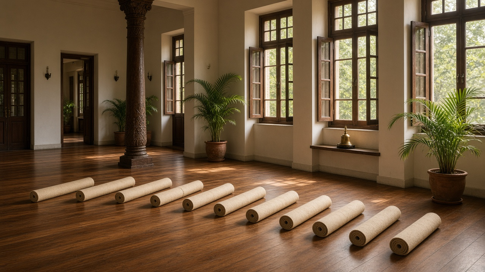
The room
Prana opened in 2015 after years of study in the ashrams of Rishikesh and Mysore. The hall is still small on purpose: cork and teak underfoot, tall windows, and a class that never hurries the first five minutes of breath.
You practise beside the same teachers each week. Adjustments are offered, never assumed. Savasana is given its full time, and herbal tea waits in the lounge when you sit up.
2015Established
15Mats in the hall
7Teachers
6 AMFirst class
The method
Asana, pranayama, and stillness are taught as one practice, in the order the tradition keeps. Postures are held long enough to feel them, and the Sanskrit name is said aloud so the shape has a history, not only a silhouette.
The hall holds fifteen students. Sound is low, phones stay in the locker, and the floor is warm cork over teak. You can hear the person beside you breathe, which is the point of keeping the room this size.
Every class is led by a named teacher you will meet again. Hands-on guidance is asked for at the start. If something in the body needs a different shape, you are given one, quietly, without the room being stopped.
A first visit begins with a short conversation at the desk: injuries, the week you have had, the class that will suit you. New students take the opening class at half price, with a complimentary wellness consultation.
The practice
From a slow Hatha morning to a private hour. Each class keeps its own pace, its own number of mats, and a teacher who stays with that work.
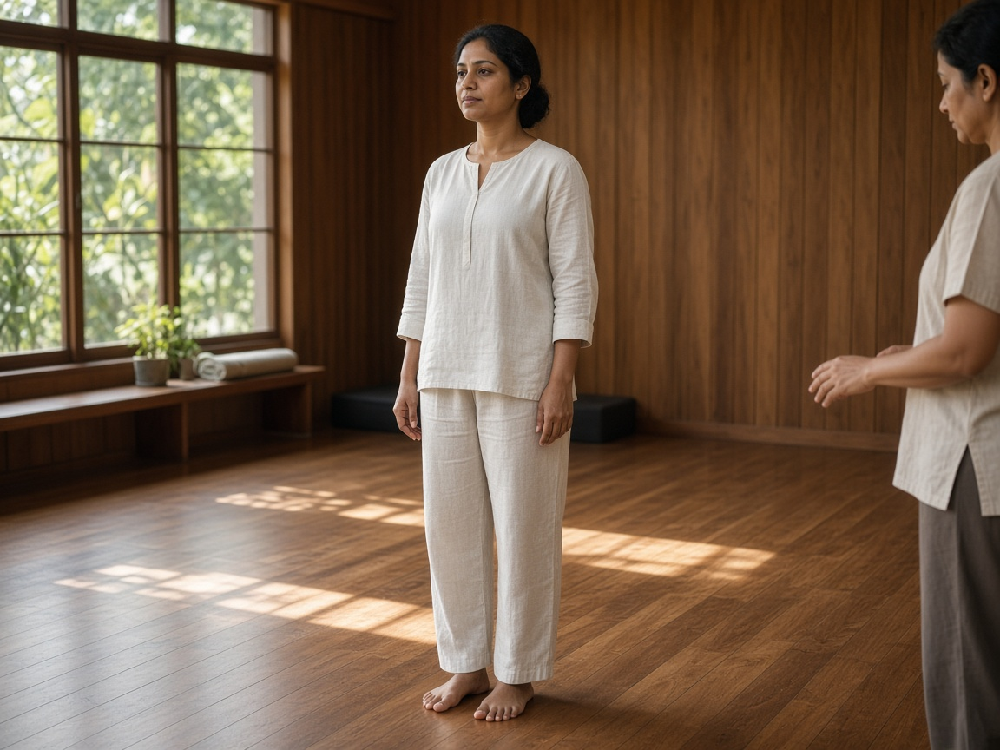
The foundation. Postures are taught one at a time, with the breath counted and the alignment explained before you move. Suited to a first practice, a return after time away, or anyone who wants the classical shapes without speed.
₹3,500
Read the class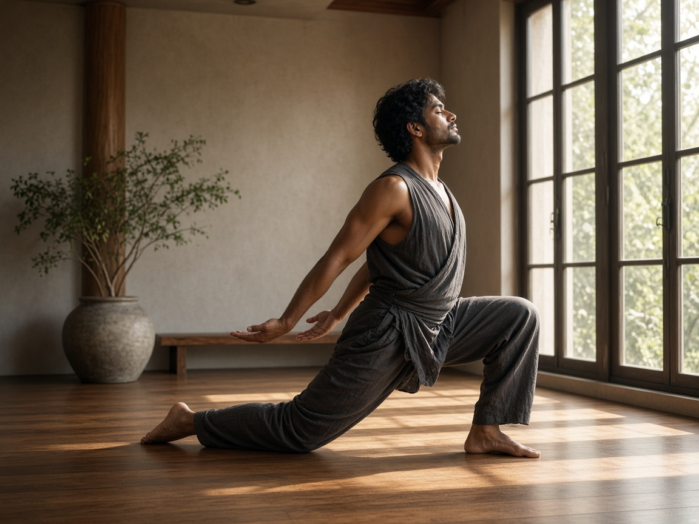
Movement tied to breath, creative but not careless. Heat builds through sun salutations and standing work, then settles into longer holds. You leave warm, clear, and a little quieter than you arrived.
₹4,500
Read the class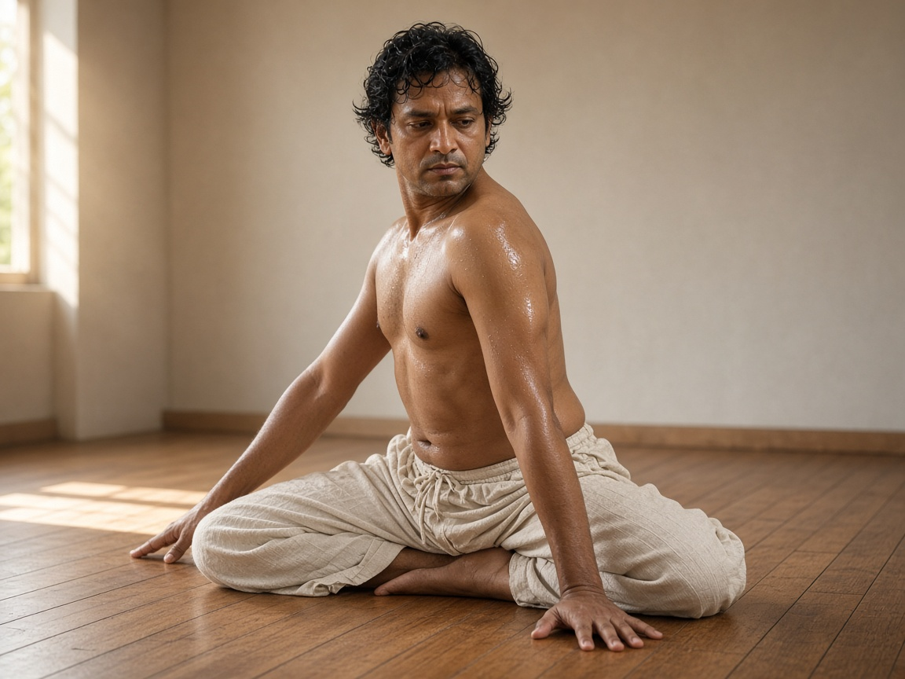
The traditional sequence, practised in order, with the same breath count each time. Strength and attention are built by repetition. This room is for students who already know the primary series, or who are ready to learn it properly.
₹5,500
Read the class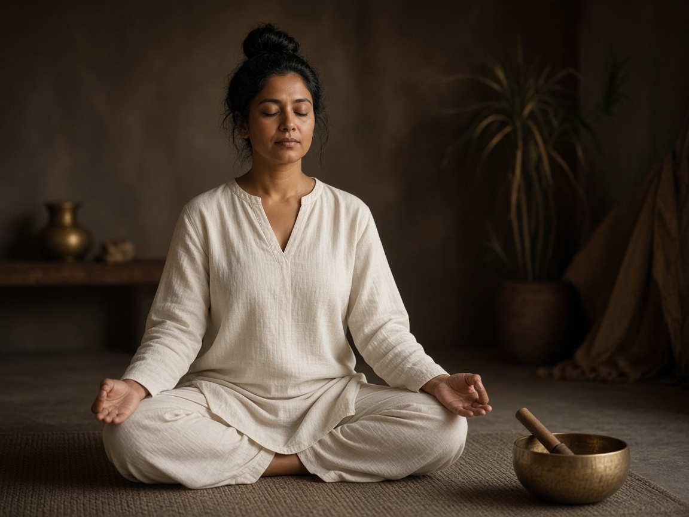
Kriya, mantra, and seated breath. The postures are simple. The work is the repetition, the sound, and the long stillness at the end. Come as you are. No prior practice is required.
₹4,000
Read the class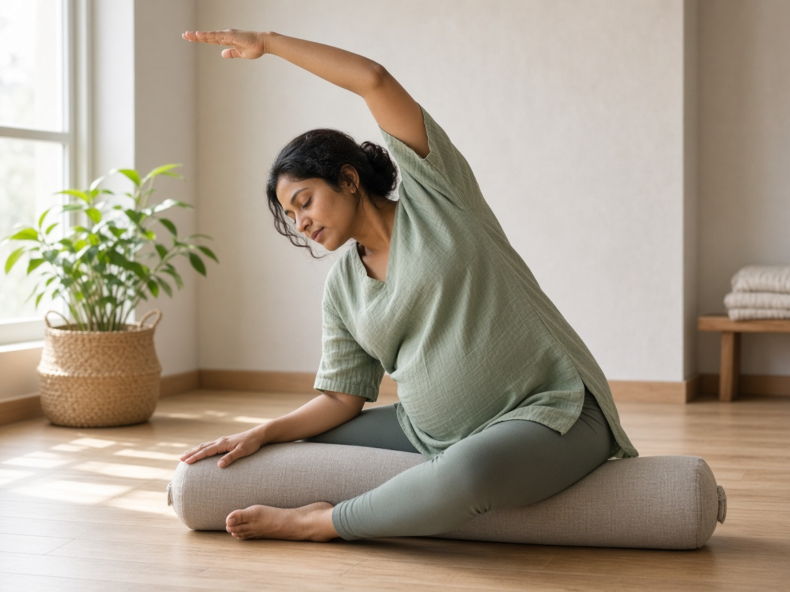
A supported practice for pregnancy, taught by Meera, who keeps the room small. Breath for labour, relief for the back and hips, and time to rest. Suitable across trimesters once your physician has cleared you to practise.
₹4,000
Read the class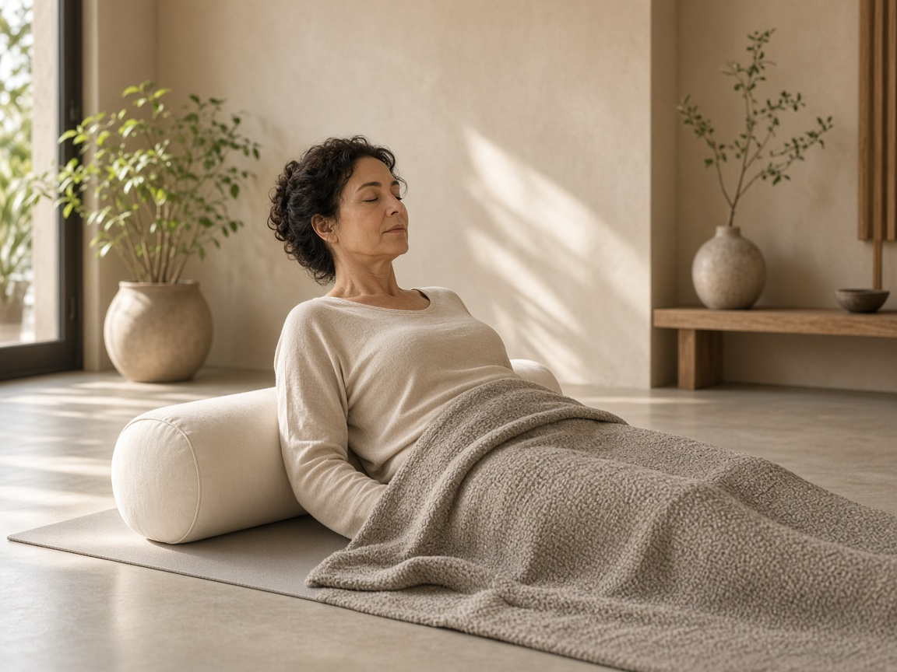
Bolsters, blankets, and shapes held for several minutes. The nervous system is invited to settle. This is the class for depleted weeks, for recovery, and for anyone who has been treating yoga as effort alone.
₹4,500
Read the classA class, in order
Come fifteen minutes early the first time. The desk takes your shoes, offers a mat, and asks what the body needs today.
Everyone sits. Five minutes of pranayama before anyone stands. The room gets quieter before it gets warmer.
The sequence is named, then practised. You are shown the full shape and a simpler one. Both are the practice.
Savasana is not a leftover minute. Lights drop. You are left alone with the breath until the teacher calls you back.
Tulsi or fennel in the lounge. Stay if you wish. The next class does not begin until the hall has been reset.
The faculty
Seven teachers. You will know who is teaching before you book, and you will see them again.
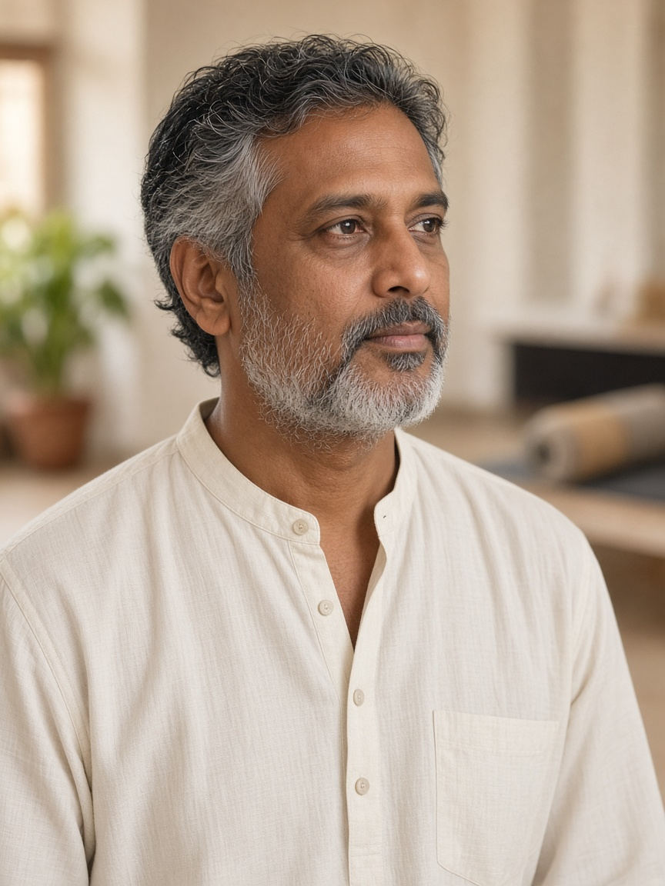
Founder · Ashtanga & philosophy
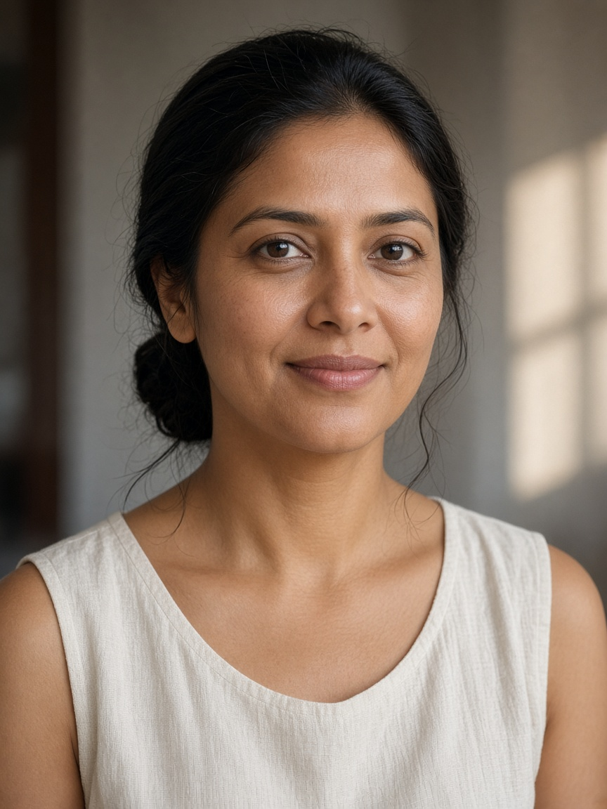
Hatha · alignment · beginners
Ashtanga · strength
Prenatal · sunrise · sunset
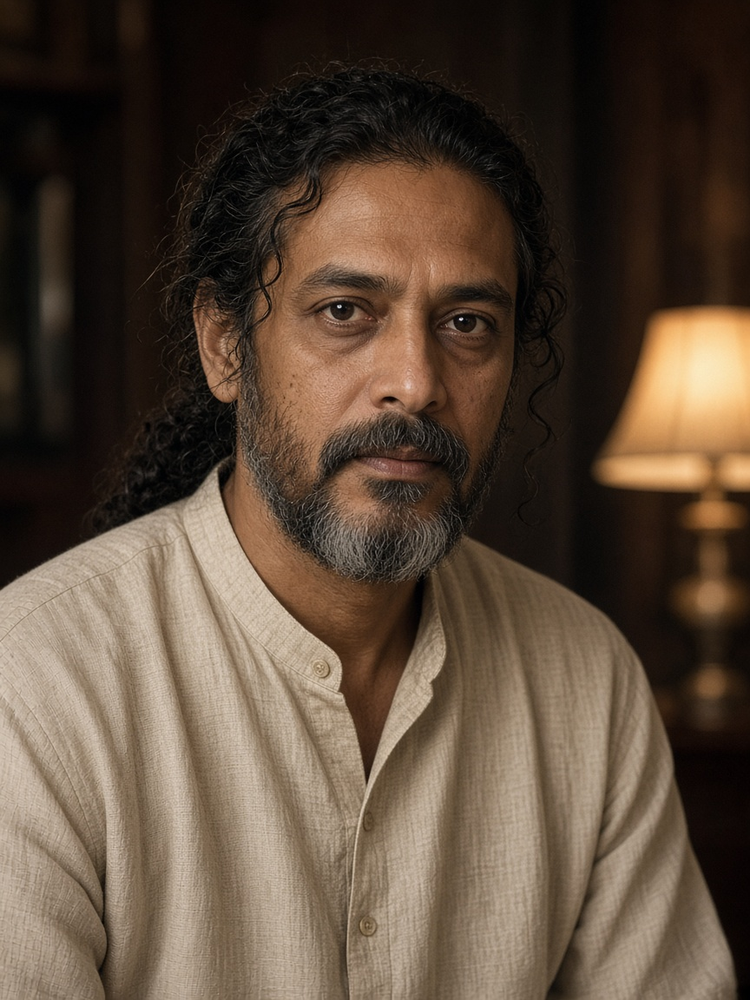
Kundalini · meditation
Restorative · evening
Gentle & family yoga
From the room
I came for the quiet and stayed for the teaching. The hall never feels crowded, and Priya remembers the shoulder I keep protecting. It is the only place in the week where I am not being asked to hurry.Priya SharmaSenior executive, technology
I had tried louder studios. Prana is the opposite: a counted breath, a teacher who will stop you if the knee is wrong, and tea afterwards. My practice is less dramatic and much more honest.Arjun PatelBusiness owner
As a dancer I already knew how to push. Ananya taught me how to stop. The restorative hour changed the way I rehearse. I leave the bungalow slower, which is what I needed.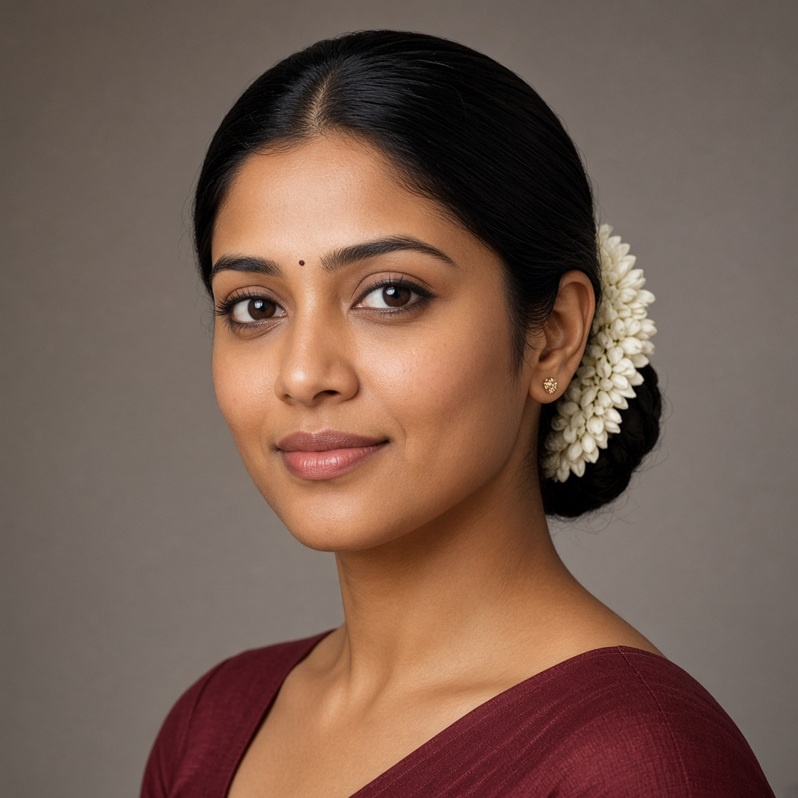
Ananya MehtaClassical dancer
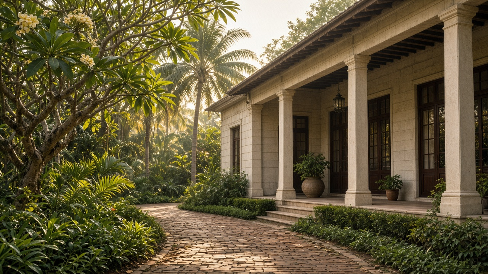
Visit
The studio sits behind a frangipani garden. Parking is in the lot beside the bungalow, and the desk will have your mat ready if you have reserved.
42, Lotus Garden RoadBegin
Write to the desk. We reply within one working day and place you in the room that fits.